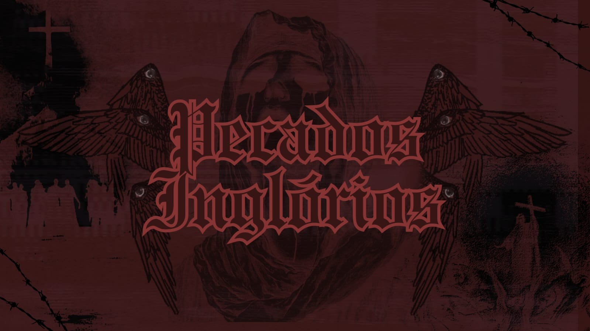

PECADOS INGLÓRIOS

ATRIBUTOS
1. Presença (PRE)
Impacto social. Carisma, autoridade, influência.
2. Corpo (COR)
Força física, resistência, coordenação motora.
3. Mente (MEN)
Inteligência, análise, percepção lógica.
4. Fé (FÉ)
Conexão com o divino ou profano. Fonte de poder ritualístico.
5. Agilidade (AGI)
Velocidade, ser ágil, mirar ou correr.
6. Vontade (VON)
Resistência mental, sanidade e vigor.
CLASSES
EXORCISTA
Perícias: Ocultismo & Teologia "Purificar pela bala. Exorcismo como execução." Brutal, ritualista e implacável. Usa fé e força em nome de Deus
INVESTIGADORPerícias: Investigação & Intuição "Conhecimento é salvação. Mais perto de reoslver qualquer caso" Analítico e intuitivo. Vasculha os mistérios por trás dos crimes.
CAÇADORPerícias: Pontaria & Sobrevivência "Se for vivo, sangra. Se sangra, morre." Rastreador implacável. Letal contra criaturas e qualquer ser vivo.
CURANDEIROPerícias: Ciências & Medicina "1400 foi a época em que sua ciências era cinfundida com magia negra, mas agora eles pedem por sua ajuda" Traz tudo de volta a vida usando tudi que pode, pai da medicina.